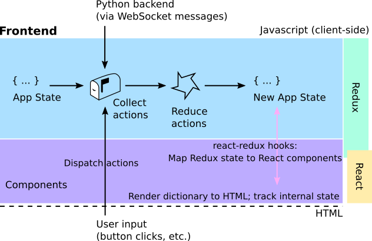

System Architecture
SkyPortal is designed to be effective, fast, and scalable. The following diagram shows the underlying architecture:

All the technological components used in SkyPortal are applied exactly for the purpose they were written. We do not attempt novel configurations that push these technologies outside of their design boundaries. Instead, we combine technologies effectively to build a robust and scalable platform, so that many of the components could be replaced, should they become unsupported.
The frontend is built on React, using Redux to drive the application logic, as shown in the following diagram:

SkyPortal is released under the BSD license. We encourage you to modify it, reuse it, and contributed changes back for the benefit of others. We follow standard open source development practices: changes are submitted as pull requests and, once they pass the test suite, reviewed by the team before inclusion. Please also see our contributing guide.